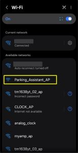

Initial Firmware Installation
The first step in preparing your ESP32 hardware is flashing the initial firmware onto the controller.
🛑 Which Path Are You On?
Before proceeding, determine which of the following three installation scenarios applies to your system:
- 🆕 New Build / Fresh Board: You are flashing a brand-new ESP32 or completely resetting a board. Stay on this page and use the WebSerial flasher below.
- 🔄 Routine Firmware Update (v0.60 to v0.61+): Do NOT use this page. Routine updates are applied wirelessly using the Firmware Upgrade feature inside your running system’s web interface.
- ⚠️ Migrating from v0.52 or Earlier: Stop here! Due to partition layout changes in v0.60+, wireless OTA updates from legacy versions are not recommended. Please follow the step-by-step v0.52 to v0.60 Migration Guide.
Prerequisites for New Installs
To complete the USB installation on this page, you will need:
- Hardware: A computer with an available USB port and a microUSB or USB-C Data Cable. (Note: “Power-only” charging cables will not work).
- Software: A Chromium-based desktop browser (Google Chrome, Microsoft Edge, Brave, or Arc) version 89 or newer.
- Firmware File: The installer below automatically fetches the latest stable binary (
ParkingAsst_vX.XX_Full.bin), but versions following v0.60 will allow selecting which version to install. If you prefer traditional desktop tools or want to install a version prior to v0.60, download the file from the GitHub Releases page.
🖥️ Desktop Utility Alternative
If you prefer not to use a Chromium-based browser with WebSerial, you can use desktop flashing tools (like esptool or ESPHome Flasher). Refer to the Beginner’s Guide to Flashing Custom Firmware video (skip to the 8:08 mark).
👉 Install FULL Firmware Here
⚠️ NEW INSTALLS ONLY - Installs the ParkingAsst_vX.XX_Full.bin
Installing the Full firmware image completely erases the controller’s internal flash memory, wiping any saved Wi-Fi and device settings. If you are trying to update a working system (running v0.60 or later) without losing settings, use the embedded app’s Firmware Upgrade feature instead.
Parking Assistant Web Installer
Connect your ESP32 to your computer via USB data cable, click below, and select your COM port to begin flashing.
🖥️ USB Drivers: The Invisible Gatekeepers
If your computer treats your ESP32 like an unrecognized device, you might be using a charge-only USB cable. Try a second known data cable before troubleshooting further.
🔍 Troubleshooting COM Ports
If no new COM port appears when plugging in your board (and you are using a verified data cable), you may need to install the CP2102 or CH340 USB-to-Serial drivers for your specific ESP32 board.
Success Criteria & Hotspot Verification
Once flashing completes:
- Unplug and reconnect the USB cable to power cycle the ESP32.
- Wait 10–15 seconds for the controller to initialize.
- Scan for available Wi-Fi networks on your phone or computer.

Success Criteria: If you see a Wi-Fi hotspot named Parking_Assistant_AP (or DeviceName_AP if re-flashing a previously named controller), the firmware flash was successful!
Next Steps
Now that your primary controller is flashed and broadcasting its setup hotspot, you are ready to connect it to your local Wi-Fi network and complete device onboarding.
Proceed to Onboarding and First Time Setup.
⚠️ Multi-Device Warning
If you are setting up more than one Parking Assistant, flash and complete onboarding for the first unit before plugging in or flashing the second unit. This prevents multiple devices from broadcasting identical default hotspots simultaneously.